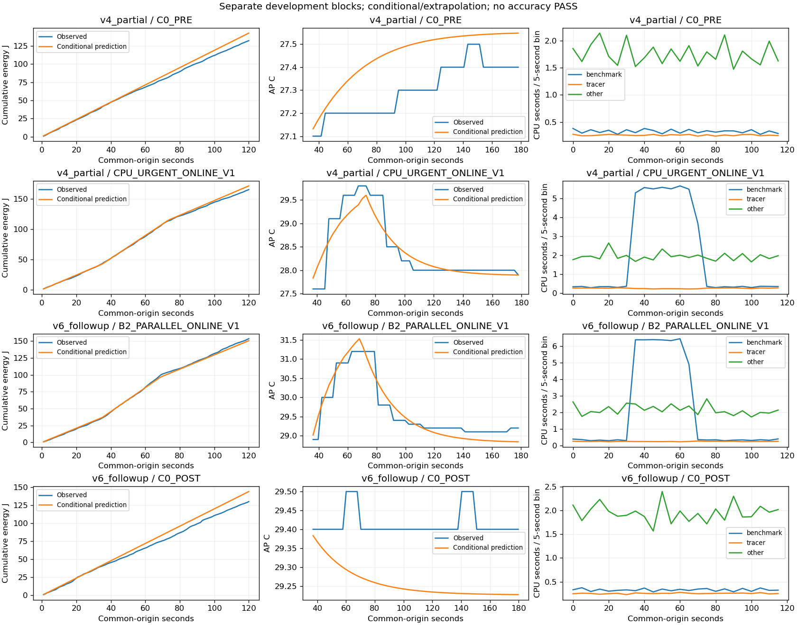

최신 PC 판독: 전력 초기화 정정·gamma 미채택 (아래 과거 수치 보존)
v5 pre-launch 실패 보존 · v4 2/4 부분 block 별도 · 독립 확인0 · gamma 미채택 · experiment_ready=false
조건부/외삽 계산. 에너지0–120초와 AP35초–cooling 점수창은 다릅니다. CPU 활동은 J 귀속이나 정책 우월성 증거가 아닙니다.
